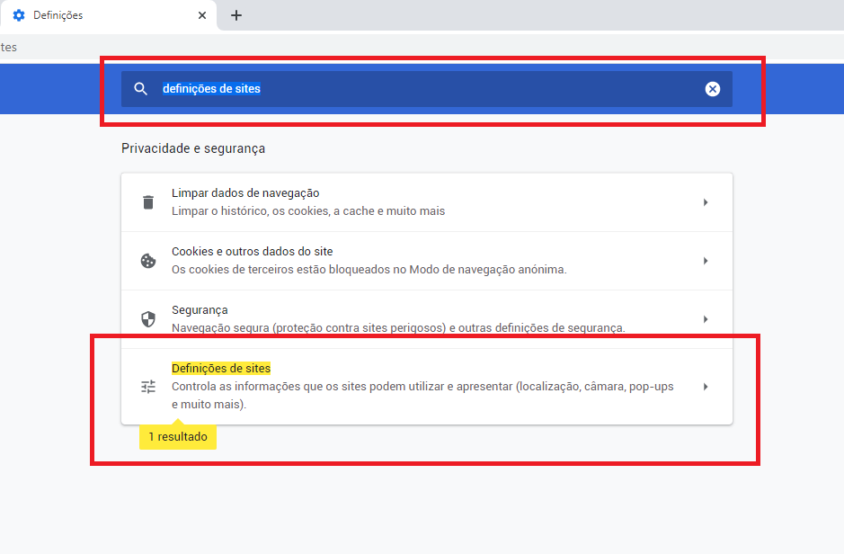
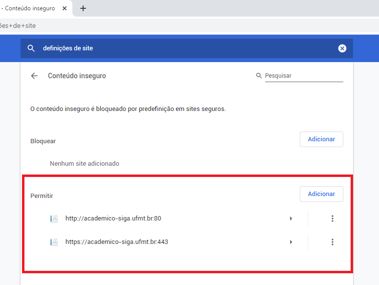

Acesso aos Menus dos Sistemas Acadêmicos
Alguns navegadores podem apresentar problemas em exibir de forma satisfatória os sistemas acadêmicos de graduação e pós-graduação da UFMT, respectivamente o SIGA e o SIPG.


A CES, não medindo esforços em melhorar o ambiente digital da comunidade acadêmica, esta voltando seu corpo de trabalho no desenvolvimento de uma nova versão do Portal Acadêmico, mais adequado com as novas tecnologias e menos suscetível à falhas de interface.
Com isso, é recomendado uma medida paliativa, configurando-se o navegador para que este possa exibir corretamente o conteúdo dos sistemas acadêmicos atuais.
Aqui constam as instruções para o Chrome, Firefox e Opera
Chrome
Método 1
Na barra de endereço do Chrome, localize e clique no texto 'inseguro' do lado esquerdo. No painel que se expandir, clique em 'Definições de sites'.

Na tela de configurações que for aberta, localize no final da página a opção 'Conteúdo inseguro' e escolha a opção 'Permitir'.

Método 2
No menu do Chrome, expanda as opções (⋮) e clique em 'Definições'

Na tela apresentada, digite 'definições de sites' e clique na opção encontrada

No final da página encontre e clique na opção 'Conteúdo inseguro'

Nas opções expandidas, adicione os endereços https://academico-siga.ufmt.br:443 e https://academico-siga.ufmt.br:80

Firefox
Método 1
Na barra de endereço do Firefox, localize e clique no icone do cadeado. Depois clique no sinal > para expandir as opções
Na informação expandida clique em 'Desativar proteção por enquanto'

Método 2
No campo de endereço, digite about:config
Clique no botão Serei cuidadoso, prometo
No campo de pesquisa, digite block_active
Defina o valor de security.mixed_content.block_active_content para falso